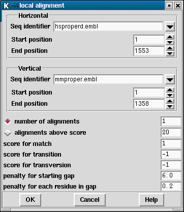

The local alignment routine is based around the program SIM by Huang and Miller which is an implementation of the Smith-Waterman algorithm Huang,X.Q. & Miller, W. A Time-Efficient, Linear-Space Local Similarity Algorithm. Advances in Applied Mathematics 12 337-357 (1991).
SIM finds k best non-intersecting alignments between two sequences or within a single sequence using dynamic programming techniques. The alignments are reported in order of decreasing similarity score and share no aligned pairs. SIM requires space proportional to the sum of the input sequence lengths and the output alignment lengths, so it accommodates 100,000-base sequences on a workstation. Both sequences must be of the same type, ie both be DNA or both be protein.

A dialogue box (shown above) requests the horizontal and vertical sequences and the ranges over which they are to be aligned ( see section Selecting a sequence). Either a specified number of alignments can be requested or alternatively, all alignments above a certain score. If the sequence is DNA, the scores for a matching aligned pair, a transition and a transversion must be provided. These values are used to generate a score matrix. For protein sequences, the score matrix can be changed from the "Options" menu ( see section Changing the score matrix). Both DNA and protein sequences require the penalty for opening a gap and the penalty for gap extension.
The alignments are displayed in the Output Window along with the percentage mismatch (see below) and on the SPIN Sequence Comparison Plot as a series of lines, each line corresonding to a single alignment. The line represents the path of alignments.
The following two plots show local alignments of two Xenopus Laevis sequences. The vertical sequence (xlactcag) is genomic DNA, and the horizontal sequence (xlacacr) is the corresponding cDNA.
The first plot is of a local alignment using a higher than default penalty for each residue in the gap (1 as opposed to 0.2). It has also been specified that all alignments scoring more than 20 are to be shown. The result of this is seven aligned regions, represented by seven diagonal lines in the plot. These regions correspond to the exons that are present in both sequences, separated by the introns that are only present in the genomic sequence.
The second plot shows the result for the same two sequences when the
default gap penalty is accepted and when only the highest scoring
alignment is displayed. This best alignment covers five of the seven
exons identified in the previous plot, with the lower gap penalty
allowing it to span the introns that separate them.
Below is a typical aligment as written to the Output Window.
Further operations available for local alignments are:
![[picture]](spin_local_p1,5.31667in.png.html)
(Click for full size image)
![[picture]](spin_local_p2,5.31667in.png.html)
(Click for full size image)
Percentage mismatch 35.7
438 448 458 468 478 488
h caggcctgtgaggaccagcagtgctgtcctgagatgggcggctggtctggctgggggccc
::::::::::: :::: :: ::: :: :: : :::: : :::::: :::
m caggcctgtgacacccagaagacctgccccacacatggggcctgggcatcctggggcccc
451 461 471 481 491 501
498 508 518
h tgggagccttgctctgtcacctgc
::: :: :::: : :::::
m tggagcccccgctcaggatcctgc
511 521 531
horizontal PERSONAL: h from 1 to 1553
vertical PERSONAL: m from 1 to 1358
number of alignments 3
score for match 1
score for transition -1
score for transversion -1
penalty for starting gap 6
penalty for each residue in gap 0.2
Last generated on 25 April 2016.